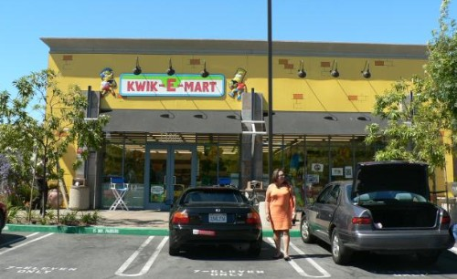
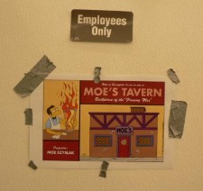
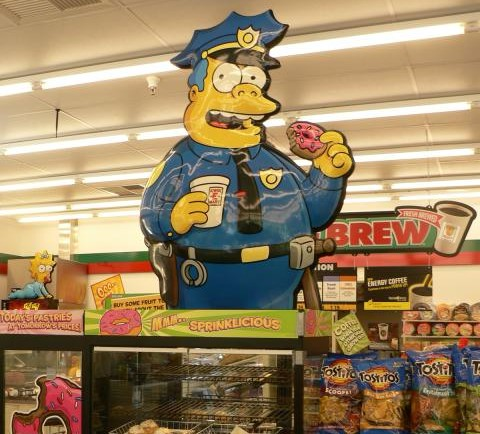
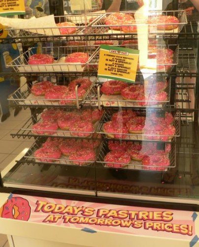
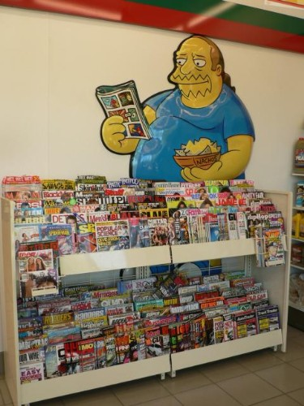
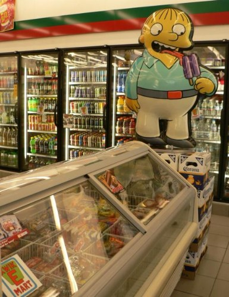
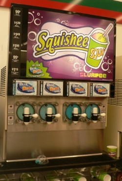
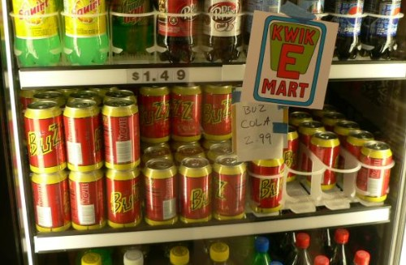
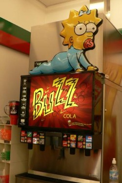
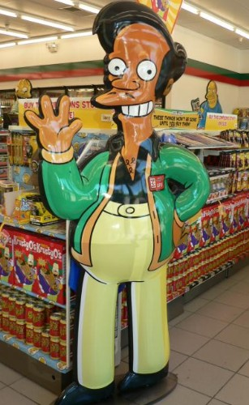

A 7-Eleven right here in our stomping grounds has been transformed into a Kwik-E-Mart. Twelve 7-Elevens in total got this treatment, and this is the only one here in the Bay Area (View location on Google Maps):


Grade-A use of duct tape
I was a little disappointed to see Bart & Milhouse flanking the Kwik-E-Mart logo, it kind of took away from any authenticity, but it’s a silly quibble, really. They did a better and more thorough job than I was expecting. One nice touch is that a bunch of paper signs have been hung up all over the store using scraps of duct tape. I have no idea if the haphazard appearance was intentional, I prefer to think it was not.
Another nice touch — pink frosted donuts with sprinkles, watched over by Chief Wiggum:

Sprinklicious!

And of course, Comic Book Guy at the porn stand:

Ralph at the popsicle case:

My dongue ith thtuckh.

Blue Woo Hoo Squishee
There was no shortage of Buzz Cola, Krusty-Os or Squishees, but sadly Duff Beer was nowhere to be found (nor the German import, Düff).
There are a number of other strange Simpson products as part of the tie-in, including a Turkish Bathhouse Homer Simpson doll, and a Homer Simpson cookie that was baked in China and looks utterly inedible. I’ll try to add pics of those later.

Buz Cola 2.99

Fancy!
This soda fountain was extra fancy — each spigot had an option to add a dollop of cherry, vanilla or lemon flavoring to the soda. Snazzy!
Apu says “Please loiter again soon!”

You can see the complete photo tour at Humuhumu’s Life in Photos.